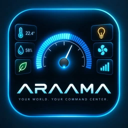
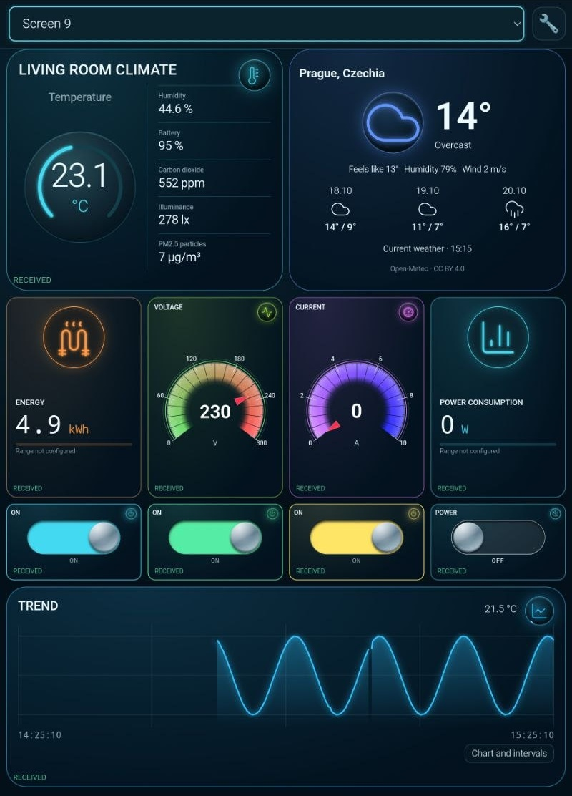

Облегчённая версия · 0.1.5
Для небольшой панели с несколькими датчиками MQTT, графиком и выключателем реле.
Скачать APK · 39 МиБ Что изменилось
ARAAMAНа одном экране можно собрать температуру с ESP32, выключатель из Home Assistant и мощность со счётчика Modbus. В настройках карточки видно, откуда приходит показание и куда уходит команда.
Бесплатно · Android 8.0 и новее
Для небольшой панели с несколькими датчиками MQTT, графиком и выключателем реле.
Скачать APK · 39 МиБ Что изменилосьДобавлены Modbus, WebSocket и Socket.IO. Команду и обратную связь можно настроить отдельно.
Скачать APK · 110 МиБ Что изменилось
Подключите планшет к MQTT-брокеру и дождитесь сообщения от ESP32. В разделе «Поиск MQTT» выберите топик и поле температуры в сообщении JSON. Привяжите поле к шкале и включите запись истории, чтобы увидеть, как меняется температура.
Импортируйте сущности нужной комнаты из Home Assistant. Для счётчика выберите Modbus TCP или подключение через шлюз RTU поверх TCP. Найдите регистр мощности в карте регистров своей модели. Панель также принимает показания по HTTP/REST, WebSocket и Socket.IO.
Откройте APK на устройстве Android. Перед обновлением экспортируйте проект. Версию 0.1.10 (сборка 101) можно установить поверх 0.1.5.
Руководство к 0.1.10 на русском (PDF) · English (PDF) · Čeština (PDF)